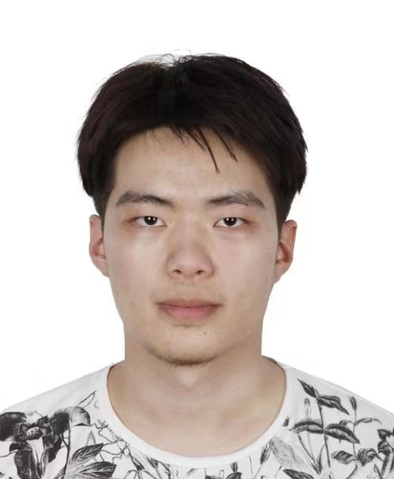

About Me
I am Wenyi Jiang, a MSCS student in Georgia Institute of Technology
I graduated from CS major in Beijing Institute of Technology
Currently, I intern in Mech-mind and working on a Robot Manipulating project which combines the
Visual and Language instruction to perform multi-task.
My interest lies on Computer Vision.
Thanks a lot for tremendous support from my girlfriend Fei Yang, who is the best gf in the world!
Publications
- Yajie Wang, Shangbo Wu,
Wenyi Jiang, Shengang Hao, Yu-an Tan, Quanxin Zhang,
Demiguise Attack: Crafting Invisible Semantic Adversarial Perturbations with Perceptual Similarity,
IJCAI, 2021, CCF-A - Invisble and Robost Backdoor attack
Internships
- Mech-mind, deep learning group, May - Aug, 2023
- Didi autonomous, perception group, April - July, 2022
- SenseTime, MIG, July - November, 2021